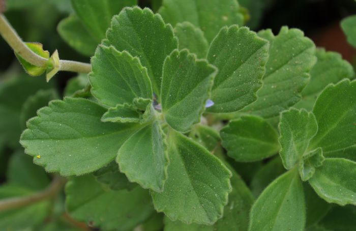

Boldinho (Plectranthus neochilus)
Visualização 3D
Carregando modelo 3D...
Iniciando...
Gire o modelo com o mouse e use a rodinha para zoom
Descrição Botânica
O Boldinho é uma planta suculenta, com folhas aveludadas e aroma forte. Cresce de 12 a 50 cm, com ramos densamente peludos. Suas flores são roxas e nascem em cachos. É fácil de cultivar e cresce o ano todo.
Propriedades Medicinais
- Antioxidante: Protege as células do corpo
- Digestivo: Ajuda em problemas no estômago e no fígado
- Contra ressaca: Alivia sintomas causados pelo álcool
- Antimicrobiano: Atua contra alguns tipos de bactérias
- Antifúngico: Combate fungos
Modos de Uso
Chá das Folhas
Como fazer:
- Ferva 1 xícara de água
- Desligue o fogo e adicione 1 colher de folhas secas
- Tampe e aguarde 10 minutos
- Coe e beba morno
Indicações: Problemas digestivos, inchaço e desconforto abdominal
Cuidados e Contraindicações
- Evite usar durante a gravidez e amamentação
- Não recomendado para pessoas com pedras na vesícula
- Não é indicado para uso contínuo ou em altas doses
Curiosidades
- É usada também como planta de telhado verde por resistir ao calor
- Seu óleo essencial tem ação inseticida e antimicrobiana
- Não produz sementes e é facilmente propagada por galhos
- Seu nome vem do grego: “plektron” (esporão) e “anthos” (flor)
Monografia Científica
Baixar PDF Completo
Monografia elaborada no Projeto de Extensão "Uso seguro de plantas medicinais pela população"
Voltar para Catálogo